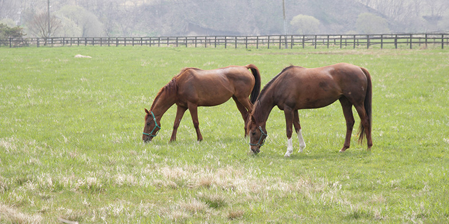
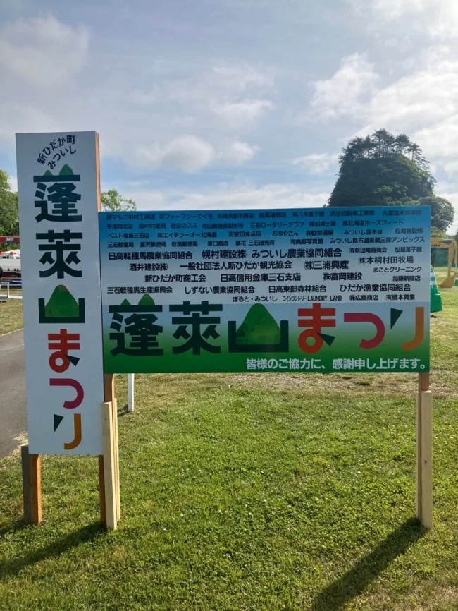
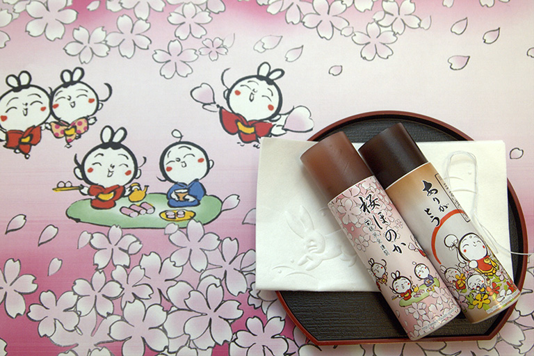
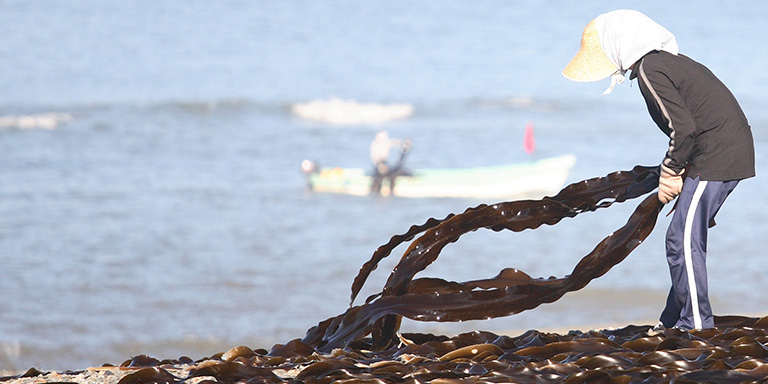
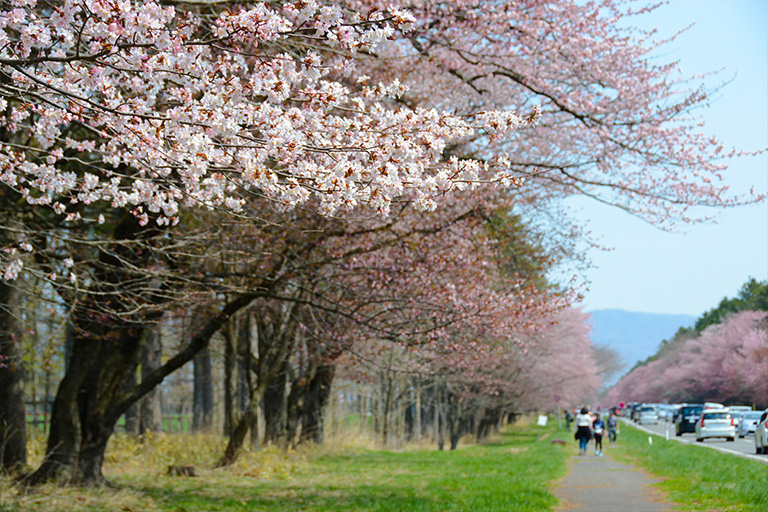

蓬莱山まつり / 2026年の会場看板ちょっと寄り道。
きっと、好きになる。
太平洋に面した、北海道・新ひだか町の三石地区。
昆布の海、馬が暮らす牧場、そしてまちのお店。
ここには、ゆっくり出会いたい日常があります。
地元の人にも、はじめて訪れる人にも。
三石をもっと身近に感じる、小さな入口を届けます。
まちのお店に、会いに行く。

松屋菓子舗
三石のお菓子を探しに。お店の紹介は現サイトへ。

みついし昆布
三石といえば、昆布。地元の恵みに触れる入口。
中村薬局
まちの暮らしを身近に。お店の紹介は現サイトへ。
該当するお店がありません。別のキーワードでお試しください。
掲載は現サイトをもとにした構成例です。写真は地域のイメージを含みます。営業状況・掲載内容は公開前に確認します。
まちの活動と、地域の案内。
お買いものの楽しみ、地域の会、三石の風景とお祭りの記録。
はまなすシール会 ↗
地元の加盟店のお買い物とつながる、はまなすシール。現サイトの仕組みと加盟店の記録をご紹介します。
特産品・地域の会三石こんぶ焼酎振興会 ↗
三石昆布の持ち味を生かす、ご当地のこんぶ焼酎。現サイトに紹介された製法の特徴と、振興会の加盟店を掲載します。
商店街・地域の会三石商店会 ↗
三石地区の国道沿いのお店が加入する会。地域を盛り上げる商店会の紹介と、現サイトに掲載された名簿です。
商品券・地域の会三石商業連合会 ↗
三石地区の商品券を取り扱う会として現サイトに紹介されています。お祝い、お礼、景品などの利用例と会員名簿を掲載します。
海の幸・地域資料三石おさかなマップ ↗
三石地域の魚介や地産地消を伝える、おさかなマップ。現サイトに掲載された4枚の資料を保存してご紹介します。
三石を知るみついしについて ↗
太平洋に面した新ひだか町三石地区。昆布の海、牧場、地域のお店と、このサイトのはじまりをご紹介します。
お祭り・2026年の開催記録しずない桜まつり ↗
第63回は2026年4月25日〜30日、二十間道路桜並木で開催日程が案内されました。変更後の公式チラシと、春の催しをご紹介します。
お祭り・2026年の開催記録みついし蓬莱山まつり ↗
2026年7月5日、三石蓬莱山公園を舞台に案内されたお祭り。地場産の食材、ステージ、子ども向け体験を、町の公式チラシとともに紹介します。
お祭り・2026年の開催記録新ひだか夏まつり ↗
第20回は7月25日の本まつりと、8月のビアガーデン・静内川と三石漁港の花火大会を案内。2026年の公式日程とチラシをまとめました。
暮らし・外部サイト新ひだかUゆう生活 ↗
現サイトで紹介されている、新ひだか町の暮らしに関する外部サイトへ。
加盟店名簿や特典には過去の情報が含まれます。各ページに掲載時点を表示しています。お祭りは2026年の開催記録に更新しました。2026年の日程は終了しています。
まちの便り。
お店のこと、地域のこと。
三石から届いたお知らせの記録。
現サイトの過去記事です。
今後の開催予定ではありません。

このまちが好き。
その想いが、つながる。
「地元を知ってもらいたい」。
そんな想いから始まった、みついしどっとこむ。
お店を営む人、このまちで暮らす人。
三石の魅力を、人の言葉で伝えていきます。
次の休日は、三石へ。
北海道 日高郡 新ひだか町 三石地区
海沿いのドライブに、まちのお店との出会いを。